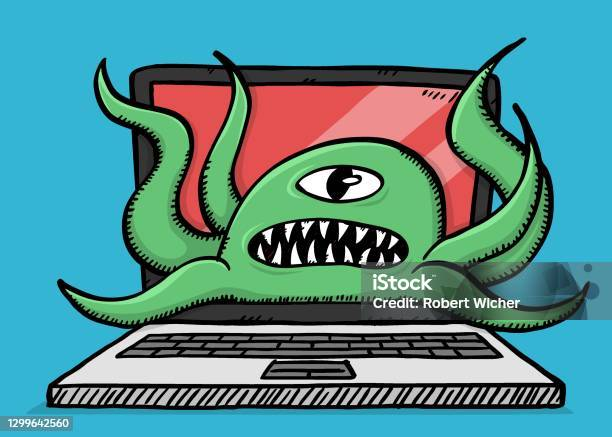

Eu fui sentar pra programar no computador
Quando abri, eu dei de cara com o lomb, o vírus amigo da galera
"Eu quero seus arquivos .json deliciosos!"
ai eu pensei comigo mesmo: "Nem ferrendo! Você não vai comer meus jason_voorhees.json!"
Então eu ativei o modo limpeza profunda e eliminei o lomb, no fim ele não é tão amigo da galera, ou talvez ele só tenha muita fome
Mas o fato é que ele vai voltar, e não vou deixar ele comer meus jsons